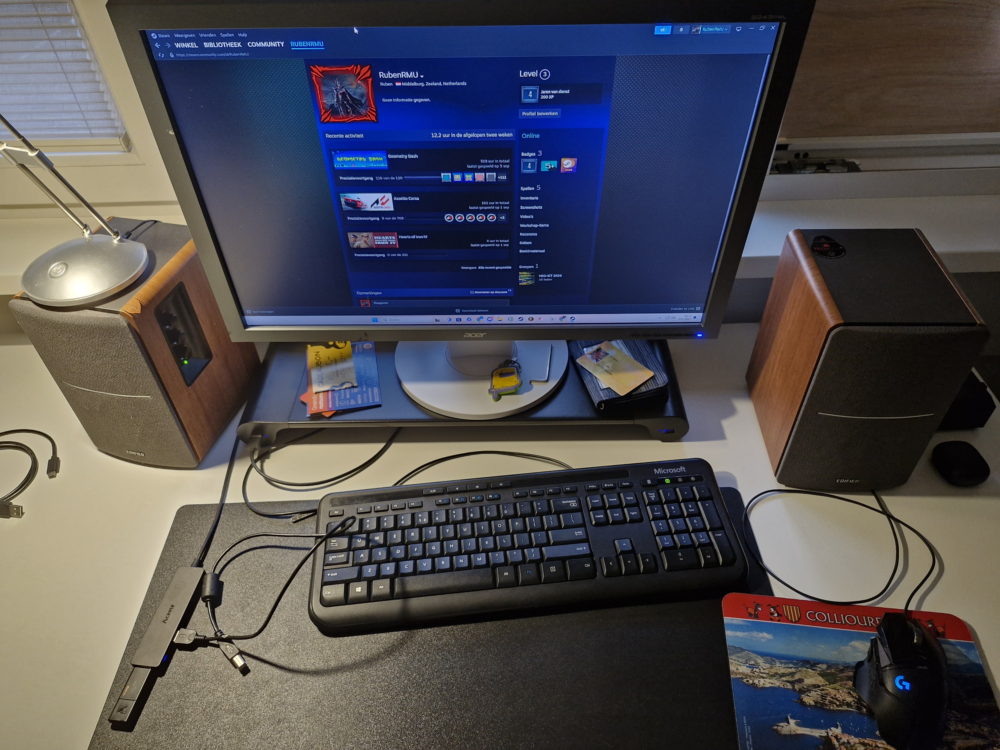

Personal information:
- Name: Ruben Becks
- Age: 17
- Hometown/Residence: Arnemuiden
- Living with: Mother, Father and Little Brother
- Hobbies: Playing guitar, producing music and gaming
Education
- Prior Education: VWO
- Profile: NT with Music and ICT
- Study Check Activities done:
- Study Choice Test
- Open Day
- Student for a day
- Trial Study Day
After the study, I hope to become a software developer (and musician on the side) which I hope to learn in these four years.
Job
- Part time job: Not anymore
- Hours worked per week: around 24
SWOT-Analysis
- Strengths: I learn quickly and work precisely
- Weaknesses: Sometimes I work too hastily
- Opportunities I see: Learning more about the world of computers and technology
- Threats I see: Having to deal with a lot of stuff at once
Additional information
- Top level sports: No
- Factors that could hinder my study: I was diagnosed with Asperger's
- Additional facilities: Extra time for exams that take lots of sketching and drawing
- Questions I have about the study: None
About Me
Hi! I am Ruben Becks, 17 years old and I live in Arnemuiden. I live with my mother, father and little brother. My hobbies are playing guitar, watching F1, nerding about the Tolkien Universe, producing music and gaming. The guitars are listed below. I produce music with FL Studio and some 3rd party plugins. And my favourite games are Horizon Forbidden West, GTA5, Minecraft, Subnautica, Elden Ring, Geometry Dash, Gran Turismo 7 and Assetto Corsa.
Something important you should know about me is that I have Asperger's, a form of autism, which causes my fine motor skills to be relatively lacking compared to most people and that I sometimes kind of wander off into my own thoughts. But those issues are relatively minor nowadays, and it doesn't bother me anymore, with the exception of drawing which I have some difficulty with.
During the vacations/breaks, I work at a company called Rounded. We are a company that supplies device parts for devices like phones, tablets, coffee machines and gaming consoles. It's a really nice place since it's a small company and we're only with 3 people in the department I work in, so it's very relaxed. It's also work that fits me perfectly since you need to be very exact, which I personally excel at.
Music has been one of my greatest passions since I was about 8 years old, and when I turned 10 years old I got a guitar for my birthday, and I was over the moon. Now, 7 years later, I have a whole bunch of guitars and I also produce, which I have been doing since 2020.
Here is one of my songs:


Images
Gaming
Here is a screenshot of when I got P3 in a race in Gran Turismo 7, a racing game which is lots of fun.
Here is a screenshot of my favourite game of all time: Horizon Forbidden West.
My gaming setup: Just a PlayStation 4, a controller and a Philips Ambilight TV.

My PC gaming setup, a fairly basic PC with and Intel 9th gen i5 and a GTX 1660ti.

My favourite racing game Assetto Corsa, a game where you can do everything from riding an F1 car at Spa to riding a T-Rex in the streets of Monaco.
Another one of my favourite games, Subnautica, a game where you explore an alien underwater world.
Music
My PRS SE Mark Holcomb signature 7 string guitar. This one plays like a dream, and I worked all summer of 2024 to afford it.
My first ever electric guitar. Had it modified a bit so it plays nicer, but still feels just as good as when I first got it.
My Ibanez JEM I got for my 13th birthday, and it's the guitar I have used the most.
My twelve-string acoustic D'Angelico, which sounds like how I imagine heaven sounds like.
A photo I took when I went to an Iron Maiden concert in July 2023, to this date the coolest concert I've went to.
My personal favourite band: Periphery, a progressive metal/djent band from Washington D.C.
Passions

Formula One is my favourite sport to watch, I have also learned a ton of history of it.
My favourite movies and books: the Lord of the Rings trilogy
The book I'm currently reading: a first edition print of The Slmarillion, which I got from my English teacher as a gift for doing really well on an exam.
Sauron is my favourite villain of all time, since they are such a cool character which an extremely deep backstory.
My lego set of Ayrton Senna's first title winning car from 1988, the McLaren MP4/4.